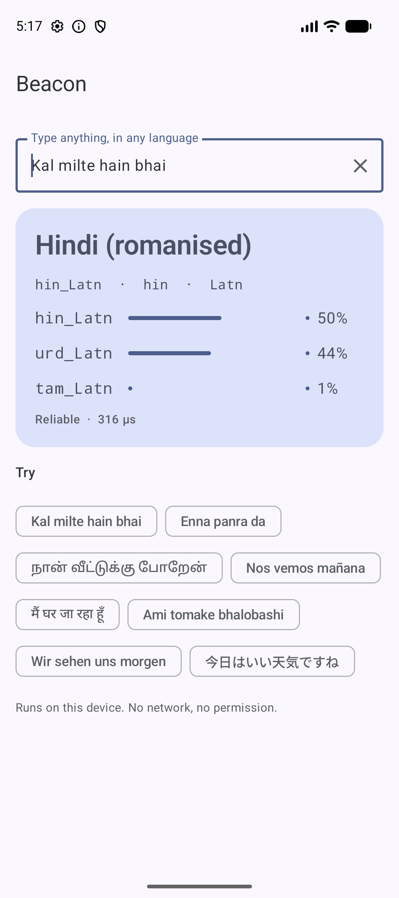
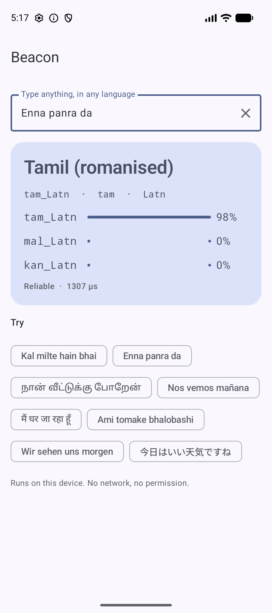
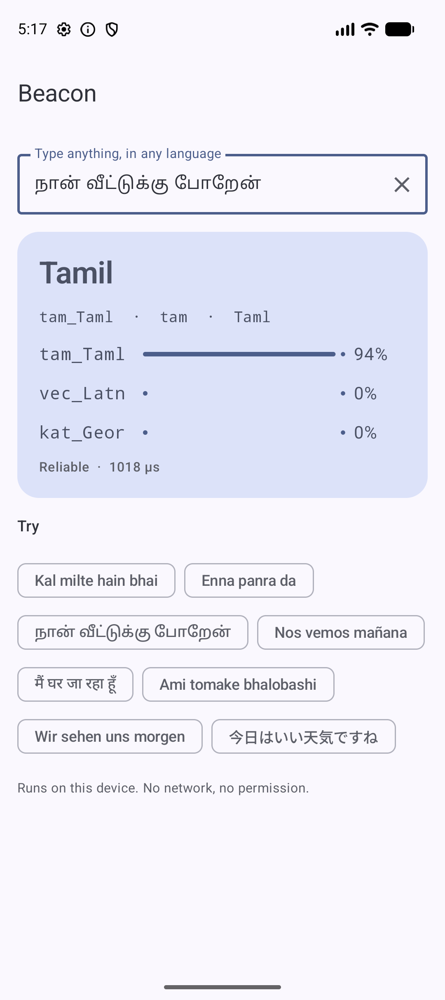

Detect the language and script of any text, even a two-word chat message or Hinglish, in under a tenth of a millisecond. It runs on the phone and sends nothing to a server.
Free & open source · Apache-2.0 code · Live on JitPack
Most language detectors are trained on long, tidy text. Beacon was trained for short messages, mixed scripts and Indian languages typed in Latin letters.
Tells Hinglish, Tanglish, Banglish and 9 more romanised South Asian languages apart, at 93% accuracy. Other detectors score close to 0% here.
Pure Kotlin inference. There is no ML Kit, TFLite or native code, and no Google Play services requirement. It adds about 8.5 MB to your APK.
The model ships inside the AAR. It makes no network calls, needs no permissions and sends no telemetry, so user text never leaves the phone.
About 0.08 ms per text on an Android emulator. That is fast enough to re-detect on every keystroke.
Real output from the sample app on an Android emulator. These are not mockups.

"Kal milte hain bhai" → hin_Latn, with Urdu (romanised) a close second

"Enna panra da" → tam_Latn, 98%

"நான் வீட்டுக்கு போறேன்" → tam_Taml, 94%
One line in your Gradle file, available now via JitPack. No API key, no account.
// settings.gradle.kts
dependencyResolutionManagement {
repositories {
mavenCentral()
maven { url = uri("https://jitpack.io") }
}
}
// build.gradle.kts
dependencies {
implementation("com.github.rajumark:beacon:v1.0.0")
}Add Beacon from rajumark to this Android project (Kotlin).
What it does: on-device language detection for 211 languages and scripts, including romanised Indian languages (Hinglish, Tanglish). ~8.5 MB, no dependencies, no network.
Install (JitPack):
settings.gradle.kts: add maven { url = uri("https://jitpack.io") } to repositories
build.gradle.kts: implementation("com.github.rajumark:beacon:v1.0.0")
Usage:
val beacon = Beacon(context) // off the main thread, keep one instance
val r = beacon.detect("Kal milte hain bhai")
r.label // "hin_Latn"
Repo: https://github.com/rajumark/beacon#readme
Add the dependency, then follow the README for the exact API and current version.Load once and reuse the instance. detect() is thread-safe.
val beacon = Beacon(context)
val r = beacon.detect("Kal milte hain bhai")
r.label // "hin_Latn"
r.name // "Hindi (romanised)"
r.isReliable // true
beacon.close()try (Beacon beacon = new Beacon(context)) {
DetectedLanguage r =
beacon.detect("Kal milte hain bhai");
String label = r.getLabel();
}Anywhere your app needs to know which language it is looking at before it does something with the text.
Switch the suggestion dictionary or layout to the language the user is actually typing.
"Enna panra da" → tam_LatnPick the source language automatically, even for romanised text that looks like English.
"Nos vemos mañana" → spa_LatnChoose the right TTS voice before reading a message aloud.
"ఎలా ఉన్నారు?" → tel_TeluSend a ticket to an agent who speaks the customer's language, before anyone reads it.
"Aap kaise ho" → hin_LatnFilter feeds, comments or search results by language on the device.
"Je suis en retard" → fra_LatnSend Hindi and Hinglish to different models, or turn on smart replies only for languages you support.
"मैं घर जा रहा हूँ" → hin_DevaBeacon compared with the best of fastText, OpenLID, MediaPipe, CLD2, langid.py, Lingua and ML Kit on each test.
| Test | Beacon | Best other detector |
|---|---|---|
| FLORES-200, 64 shared languages | 98.5% | OpenLID-201 98.9% (158 MB) |
| Short text, ≤ 5 words | 93.8% | Lingua 89.0% |
| Chat messages (188 hand-written) | 88.3% | MediaPipe 71.3% |
| Romanised Indic (human + real chat) | 93.0% | MediaPipe 7.5%, others ~0% |
Known limits: single words are hard (65%). Close pairs stay close: Bosnian/Croatian/Serbian, Indonesian/Malay, and romanised Hindi vs romanised Urdu, which are the same spoken language.
| Member | Description |
|---|---|
Beacon(context) | Loads the bundled model. Implements Closeable. |
detect(text) | The most likely language, or DetectedLanguage.UNDETERMINED when the text has no letters. |
candidates(text, limit = 3) | The most likely languages, best first. |
supportedLabels | All 211 labels, such as hin_Latn or tam_Taml. |
DetectedLanguage(label, language, script, name, confidence) | One result, with ISO 639-3 language and ISO 15924 script codes and isReliable. |
An Android library that returns the language and script of a piece of text, from a list of 211 labels. That list includes all 22 scheduled Indian languages and 12 romanised South Asian languages.
Language plus script: Hindi (ISO 639-3 hin) written in Latin letters (ISO 15924 Latn). The same language in Devanagari is hin_Deva.
Yes. Inference runs entirely on the device in plain Kotlin. It makes no server calls, needs no network permission and sends no telemetry.
On an Android emulator it scored 88.3% vs 71.3% on chat, 93.2% vs 84.0% on short text, and 92.1% vs 6.9% on romanised Indic. It also needs no Google Play services.
Normalization, feature ids and predicted labels match the Python reference on all 958 test vectors, both on the JVM and on an Android device.
Nothing. The code is Apache-2.0 and there are no usage limits or accounts. The training data sources are listed in the NOTICE file.